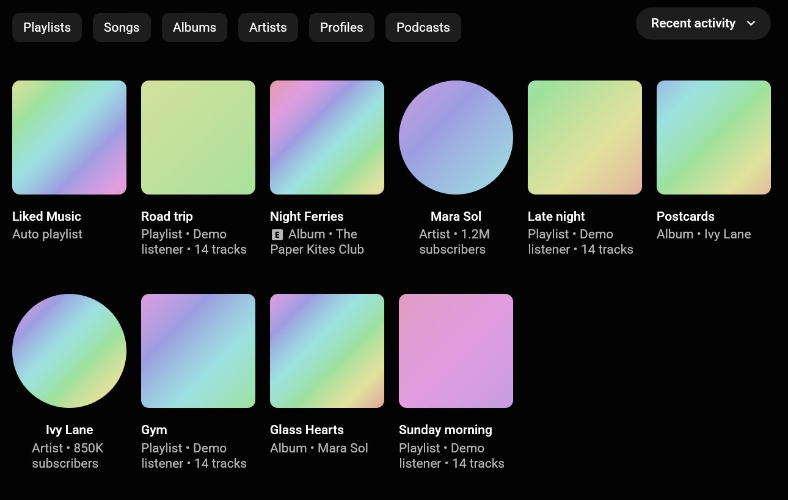

About YTFast
YTFast is a native desktop app for YouTube Music on Windows and Mac. It is built and run by Likheet Shetty.

Why YTFast exists
Music players used to be some of the lightest programs on a computer. Today most streaming apps are web pages inside a browser, and they use the CPU and memory to match. YTFast rebuilds YouTube Music as a native app that idles at 0% CPU, stays under 200 MB of memory, and starts songs in about a second.
So far
- April 2026Started building YTFastA native YouTube Music player, written in Rust.
- UNSW Founders Demo DayMore than 30 preorders and reservationsVisitors could pre-order Pro for $4 or reserve a copy before it was public. Everyone who pre-ordered gets Pro.
- 8 October 2026Version 0.5 for Windows and MacThe app now follows YouTube Music's look, screen by screen, and uses less memory.
- October 2026Public downloads and the free trialAnyone can download YTFast from this site and use it free for 14 days.
How YTFast makes money
Every download is the full app, free for 14 days. To keep using it, you buy YTFast Pro for US$4, paid once. See pricing. We also build custom desktop apps for companies that want software this light.
Who is behind it
YTFast is built and run by Likheet Shetty. Email founder@ytmfast.com to reach him directly.
Credits
YTFast follows the path set by Spotifast, Carmine Paolino's app for Spotify, and is built on fastframe, the same foundation. Thanks also to Claude, by Anthropic, for the help along the way.
Contact
For questions, feedback and problems with the app, email hello@ytmfast.com. For partnerships, custom apps or press, email founder@ytmfast.com.
Trademarks
YTFast is an independent project. It is not affiliated with, sponsored by, or endorsed by Google LLC or YouTube. YouTube and YouTube Music are trademarks of Google LLC.